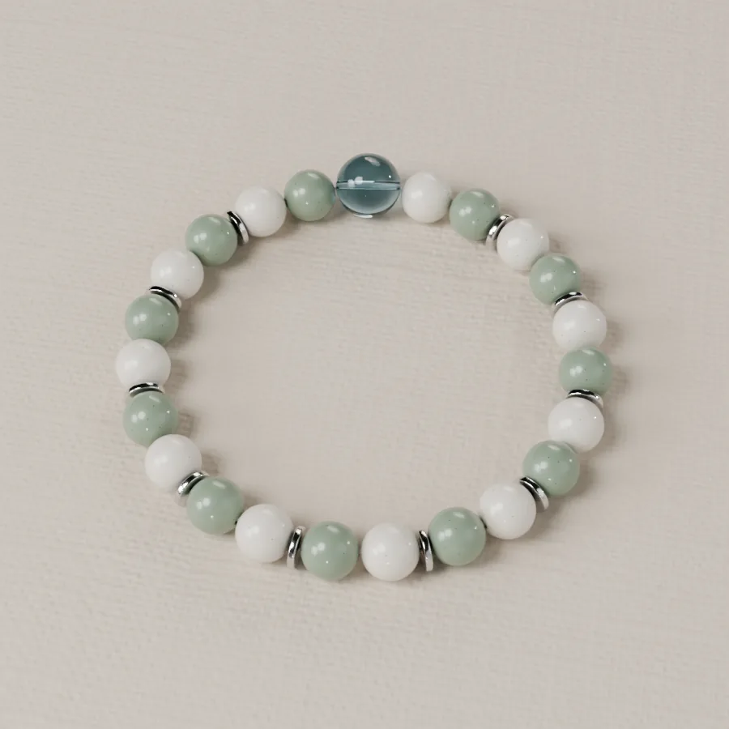
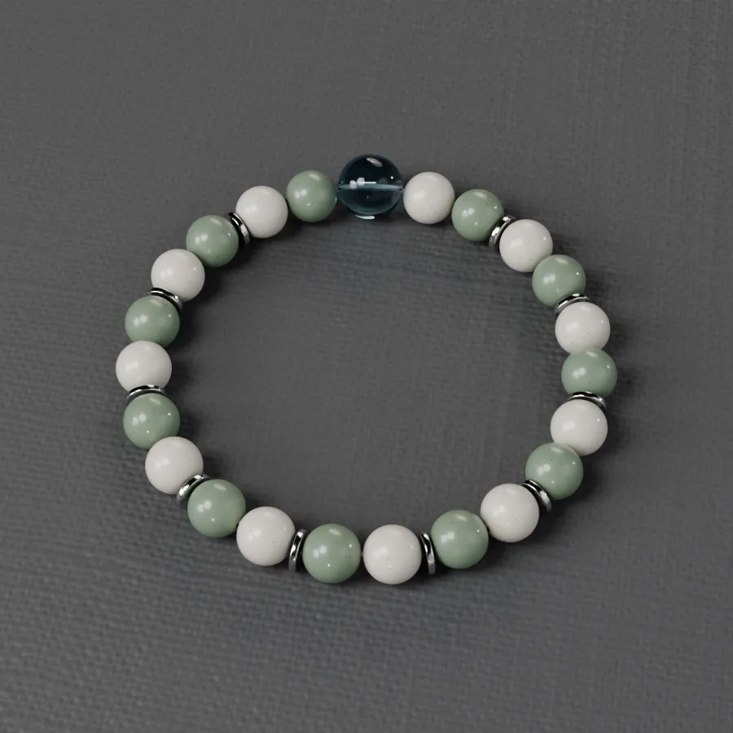

Émail & Verre
Céladon
Céramiques sauge et ivoire, une goutte de verre océan.
59 € · prix indicatif
Prix indicatif pour la taille de référence ; il suit la taille et les perles choisies.
- Taille de référence
- poignet 15,5 cm, aisance confort
- Longueur intérieure estimée
- 17,0 cm
- Montage
- Fil élastique, sans fermoir
- Statut
- Composition de référence, avant échantillonnage
Composition
| Verre bleu océan · ronde · 10 mm | × 1 |
| Céramique émaillée sauge · ronde · 8 mm | × 11 |
| Céramique émaillée ivoire · ronde · 8 mm | × 11 |
| Acier inoxydable 316L · intercalaire · 6 × 1 mm | × 10 |
Entretien
Retirez le bracelet pour nager, vous doucher ou faire du sport. Évitez parfums et crèmes au contact. Rangez-le à plat, à l’abri de la lumière.